Øl behøver ikke kun være noget man drikker. Vælg en af vores 4 øl, så har vi 2 super lækre madopskrifter du kan lave med dem 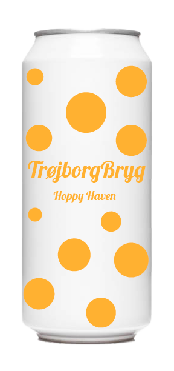 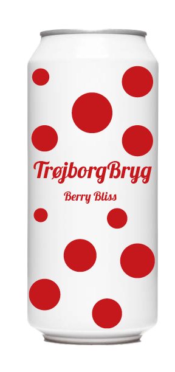 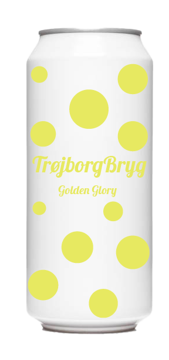 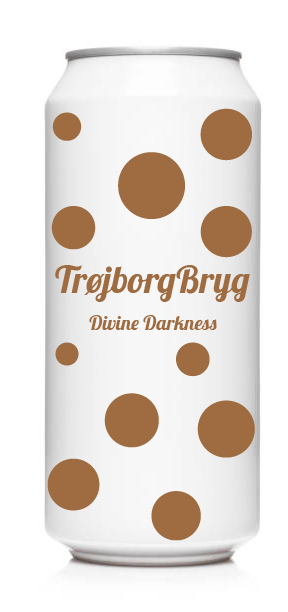 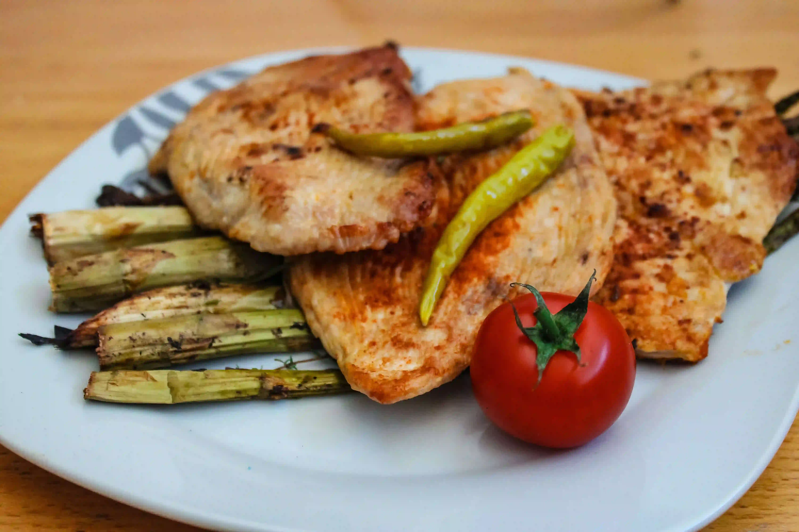 Kylling i IPA-Marinade 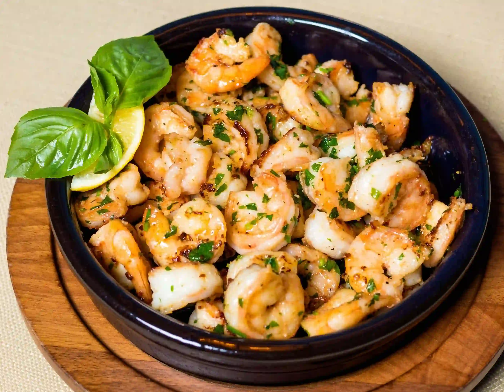 Tigerrejer med IPA-Vinegarette Cheesecake med sour-jordbærgelé 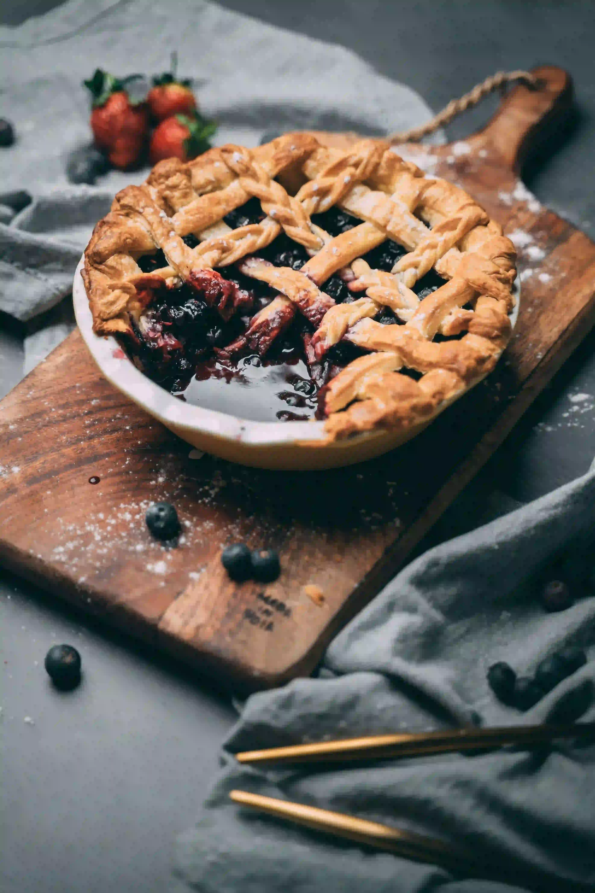 Blåbærtærte med Sour-fyld 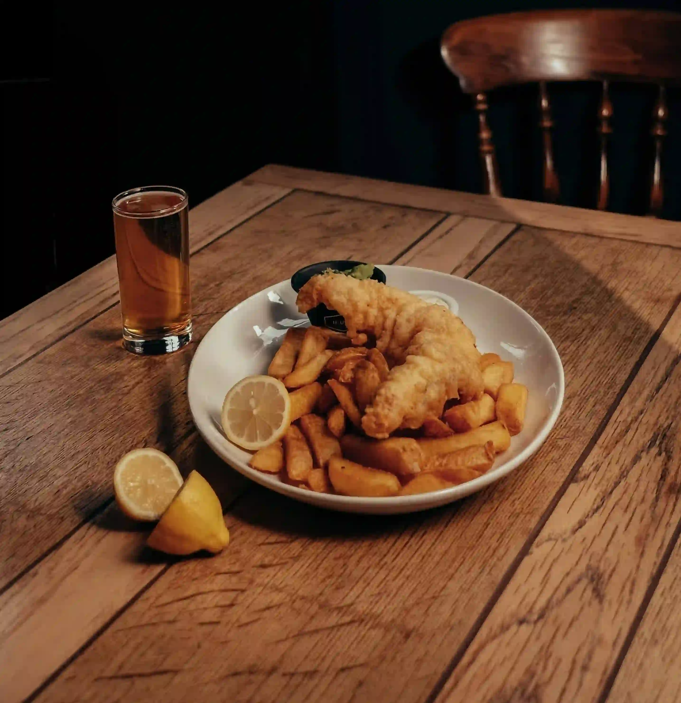 Fish n' Chips i Pilsner-panering 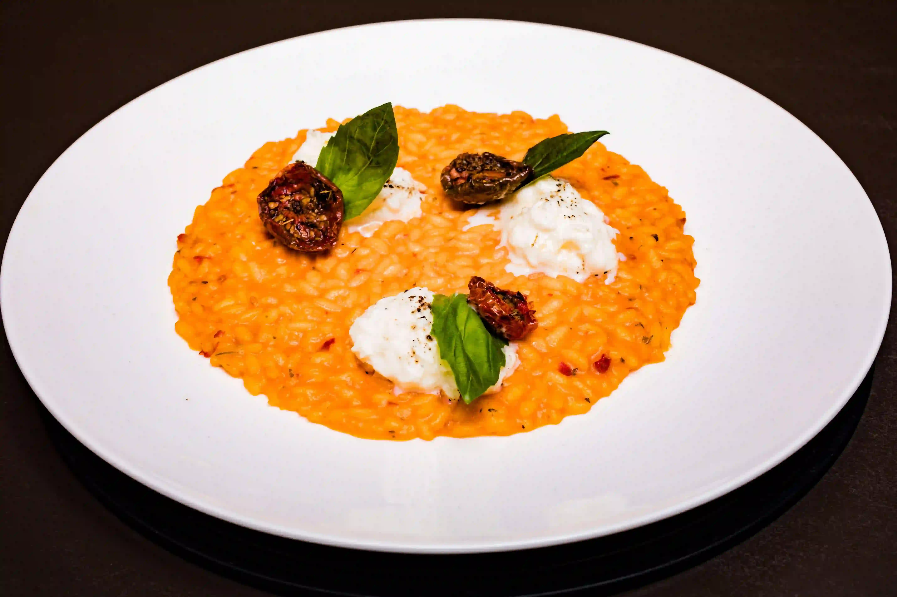 Risotto med Pilsner 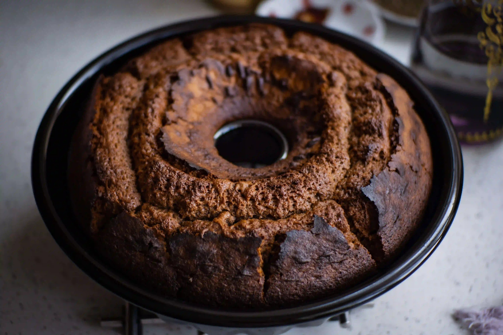 Dubbel-Chokoladekage 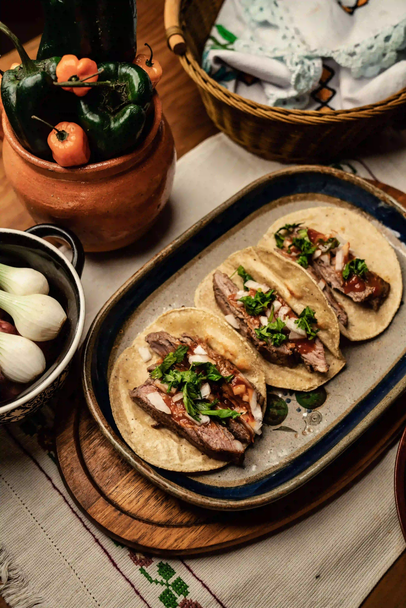 Short Rib Tacos braiseret med dubbel